MATERIALS & COMPATIBILITY
A clearer reference point for ceramics, attachments, acrylics, and case planning
Use this page as a practical summary of the materials and system references that matter most during outsourcing: esthetic ceramics, removable options, attachment systems, and component-aware case communication.
For fixed cases
Quick visibility into all-ceramic, zirconia, and PFM-related material families.
For removable cases
Useful when your team needs acrylic, thermoplastic, or attachment references before approval.
For planners
Supports discussions around bars, locks, attachments, and compatible restorative directions.
For coordinators
Pairs with downloads and RX forms so incoming cases arrive with fewer clarification loops.
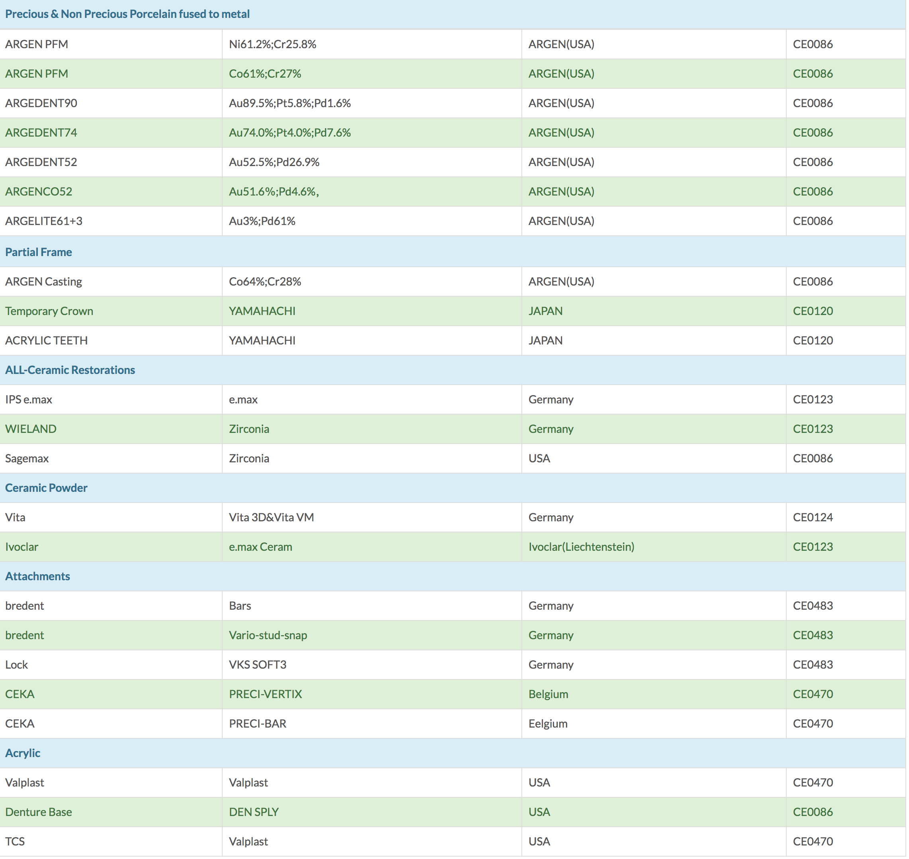
BRAND FAMILIARITY
Material families your team is likely to recognize
Doctors, buyers, and coordinators often recognize material families visually before they read technical notes. This section keeps that cue so teams can map the page quickly to familiar material ecosystems.
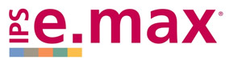
IPS e.max
Pressed and layered esthetic ceramic workflows.
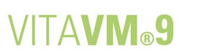
VITA VM9
Ceramic layering support for high-esthetic cases.
Wieland
Zirconia-oriented workflows and restorative planning.
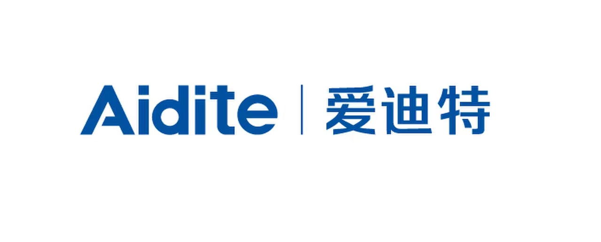
Aidite
Digital ceramic production and milling-adjacent systems.
Shofu
Finishing and esthetic material familiarity for lab teams.
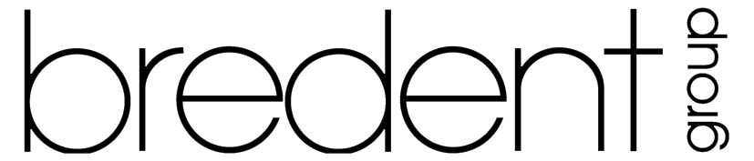
bredent
Bars, attachment concepts, and removable support options.
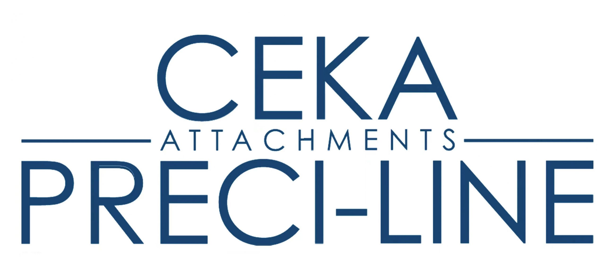
CEKA
Attachment systems referenced for precision removable cases.
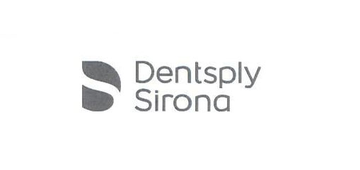
Dentsply
Recognized implant and denture-related material references.
Valplast
Flexible removable indications and acrylic alternatives.
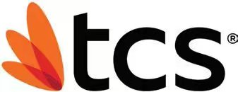
TCS
Thermoplastic removable pathways for selective indications.
WORKING REFERENCE
How we frame material choices inside case communication
The point of this page is not to overwhelm clinics with every SKU. It is to make planning conversations faster by grouping materials into decision-ready categories your team can reference while preparing the RX, photos, scans, and shade instructions.
Fixed and esthetic
PFM, zirconia, layered ceramics, and esthetic anterior workflows supported by digital design or conventional submission.
Attachments and bars
Attachment-oriented removable cases benefit from early communication around bars, locks, and component direction.
Removable and acrylic
Flexible and acrylic denture cases usually need the clearest indication notes, bite details, and finishing expectations.
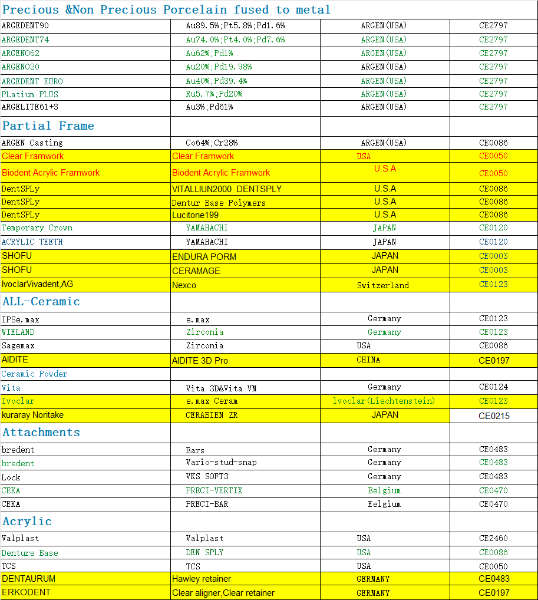
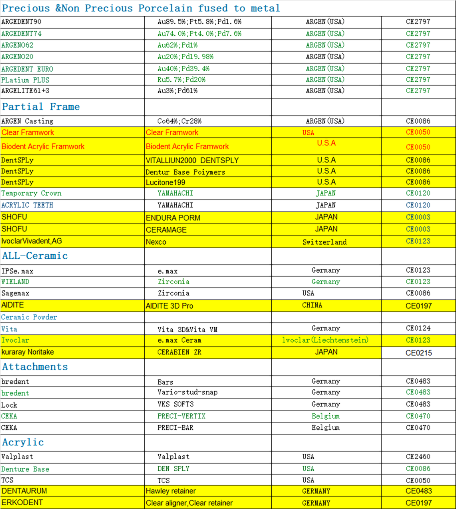
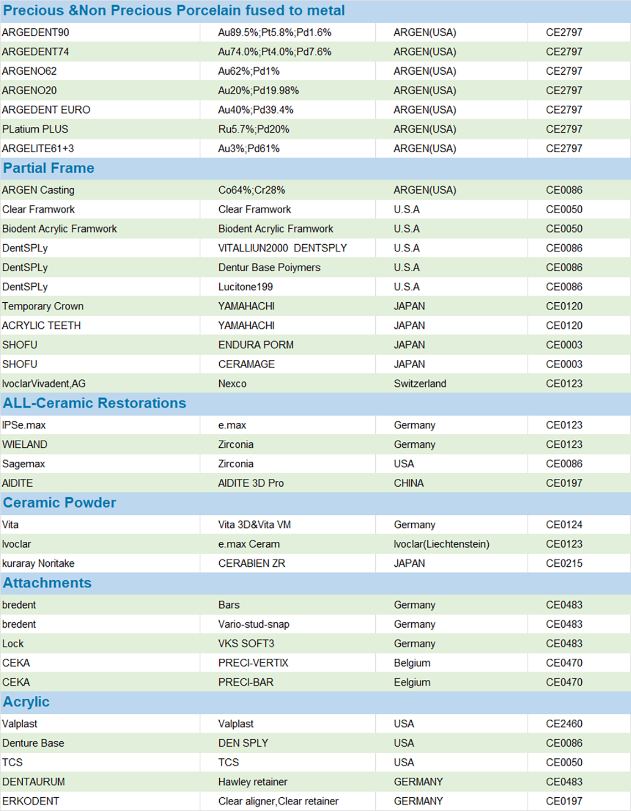
NEXT STEP
Turn compatibility questions into cleaner submissions
If your clinic already knows the restorative direction, use this page as a pre-submission check. If the case is still open-ended, send the scans, photos, and treatment goal first and we can help align the material route before production starts.
Best used with
RX forms, shade photos, occlusal notes, and any implant or attachment detail your doctor already has.
Useful linked pages
Pair this page with downloads, technology, and products.
Typical systems clinics ask about
Nobel Biocare, Straumann, Zimmer, Dentsply, MIS, Implant Direct, Atlantis, Camlog, BioHorizons, Bicon, and other compatibility-aware workflows referenced through the broader resource center.